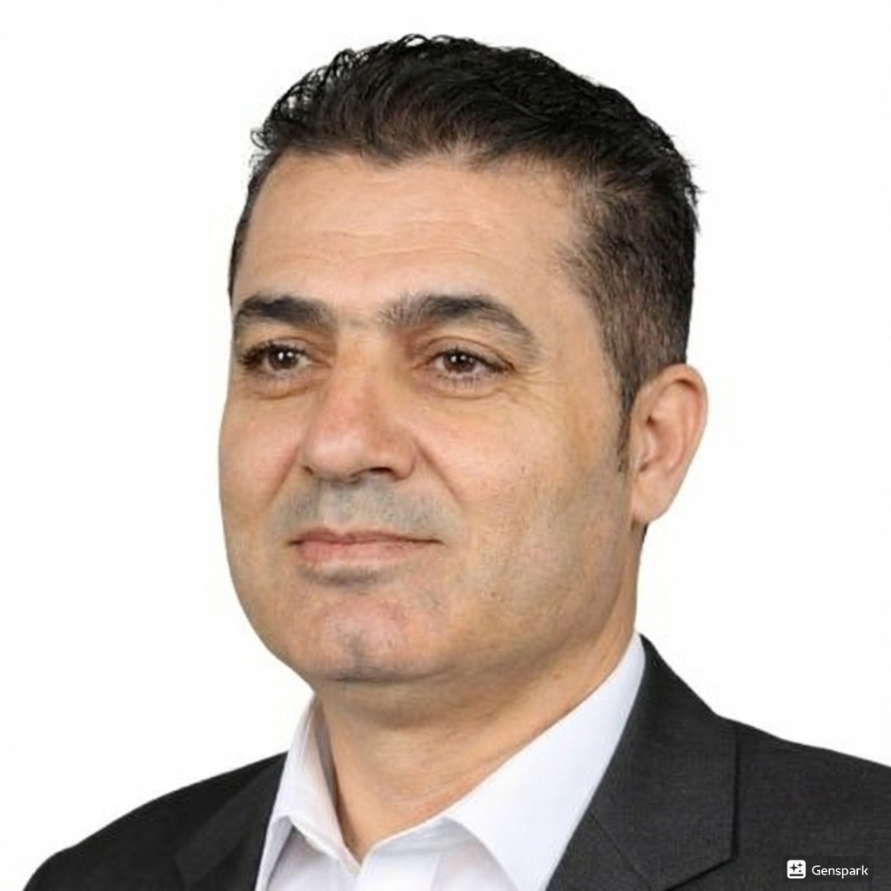
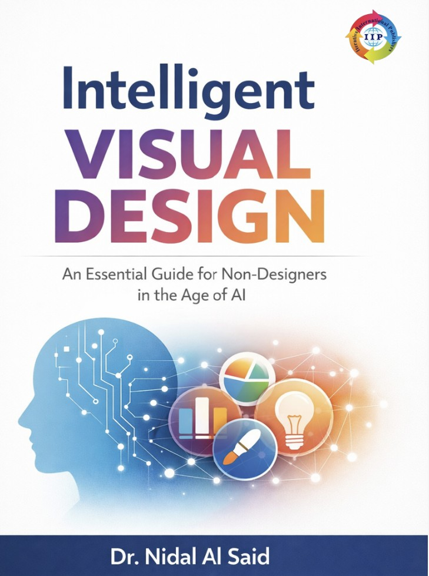

Nidal Al Said
Associate Professor at Ajman University | AI, HCI & Data Analytics | Smart Digital Systems | Interdisciplinary Research and Innovation in Technology, Media, Design & Education
United Arab Emirates

Professional Profile
Associate Professor of Information Technology with extensive academic, research, and leadership experience across the UAE, Oman, Jordan, and Greece. Recognized expertise in Institutional Effectiveness, Academic Accreditation, Curriculum Design, and Outcome-Based Education. Research interests include Artificial Intelligence, Machine Learning, Data Mining, Human–Computer Interaction, Smart Applications, and AI integration in education and digital media systems.
20+
Years of Experience
20+
Publications
6
Research Areas
3
Languages
RESEARCH AREAS
- Artificial Intelligence
- Machine Learning
- Data Mining
- Human–Computer Interaction
- Smart Applications
- AI in Education & Digital Media
Selected Books

INTELLIGENT VISUAL DESIGN

The Digital Nexus
Selected Research
Enhancing Computer Science Education Through Artificial Intelligence: A Meta-Analysis Approach
Journal Article – 2025
Journal Article – 2025
Optimization Method of Human Posture Recognition Based on Kinect V2 Sensor
Biomimetics – 2025
Biomimetics – 2025
Selected Intellectual Property
Smart Predictive Data Mining Framework for Early Detection of Online Content Manipulation and Fake Digital Media
Patent Filed
Patent Filed
Hybrid AI-Based Digital Media Authenticity Detection System
Innovation Proposal
Innovation Proposal
Selected News
Invited as Guest Editor for Special Issue on AI-Driven Digital Systems – 2026
Launch of “Intelligent Visual Design” – International Release – 2026